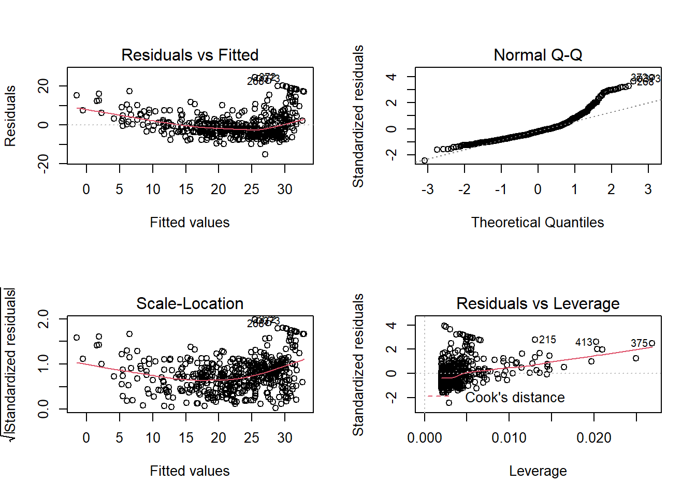
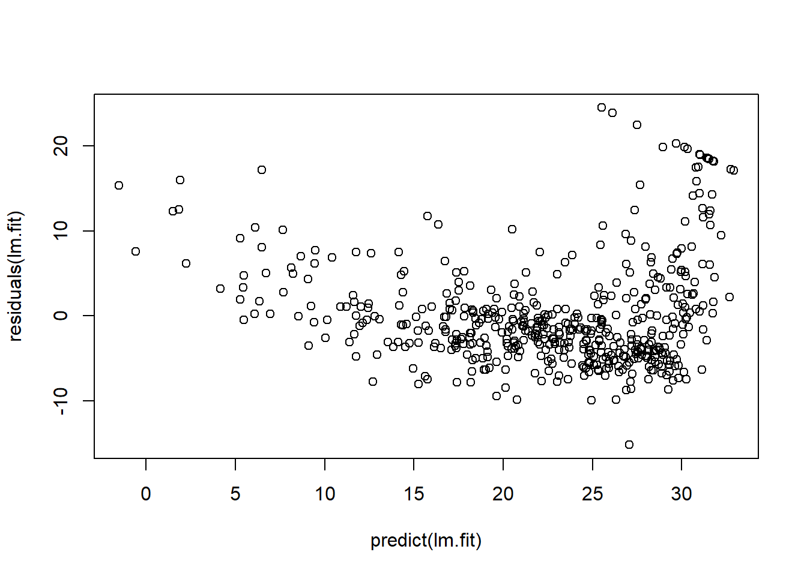

Section 7 Lab: Linear Regression
# Load the library
library(MASS)
library(ISLR)7.1 Simple Linear Regression
The Boston data set records medv (median house value) for 506 neighborhoods around Boston. We will seek to predict medv using 13 predictors such as rm (average number of rooms per house), age (average age of houses), and lstat (percent of households with low socioeconomic status).
names(Boston)
## [1] "crim" "zn" "indus" "chas" "nox" "rm" "age"
## [8] "dis" "rad" "tax" "ptratio" "black" "lstat" "medv"We will start by using the lm() function to fit a simple linear regression lm() model, with medv as the response and lstat as the predictor.
lm.fit = lm(medv ~ lstat, Boston)
lm.fit
##
## Call:
## lm(formula = medv ~ lstat, data = Boston)
##
## Coefficients:
## (Intercept) lstat
## 34.55 -0.95For more detailed information, we use summary(lm.fit). This gives us p-values and standard errors for the coefficients, as well as the \(R^2\) statistic and F-statistic for the model.
summary(lm.fit)
##
## Call:
## lm(formula = medv ~ lstat, data = Boston)
##
## Residuals:
## Min 1Q Median 3Q Max
## -15.168 -3.990 -1.318 2.034 24.500
##
## Coefficients:
## Estimate Std. Error t value Pr(>|t|)
## (Intercept) 34.55384 0.56263 61.41 <2e-16 ***
## lstat -0.95005 0.03873 -24.53 <2e-16 ***
## ---
## Signif. codes: 0 '***' 0.001 '**' 0.01 '*' 0.05 '.' 0.1 ' ' 1
##
## Residual standard error: 6.216 on 504 degrees of freedom
## Multiple R-squared: 0.5441, Adjusted R-squared: 0.5432
## F-statistic: 601.6 on 1 and 504 DF, p-value: < 2.2e-16We can use names() function in order to find out what other pieces of information are store in lm.fit.
names(lm.fit)
## [1] "coefficients" "residuals" "effects" "rank"
## [5] "fitted.values" "assign" "qr" "df.residual"
## [9] "xlevels" "call" "terms" "model"Assessing the coefficient of the model:
coef(lm.fit)
## (Intercept) lstat
## 34.5538409 -0.9500494Assessing the confidence interval for the coefficient estimates:
confint(lm.fit)
## 2.5 % 97.5 %
## (Intercept) 33.448457 35.6592247
## lstat -1.026148 -0.8739505To produce confidence interval an prediction intervals for the prediction of medv for a given value of lstat.
predict(lm.fit, data.frame(lstat = (c(5, 10, 15))), interval = "confidence")
## fit lwr upr
## 1 29.80359 29.00741 30.59978
## 2 25.05335 24.47413 25.63256
## 3 20.30310 19.73159 20.87461predict(lm.fit, data.frame(lstat = (c(5, 10, 15))), interval = "prediction")
## fit lwr upr
## 1 29.80359 17.565675 42.04151
## 2 25.05335 12.827626 37.27907
## 3 20.30310 8.077742 32.52846We will now plot medv and lstat along with the least squares regression line using the plot() and abline() functions.
attach(Boston)
plot(lstat, medv)
abline(lm.fit) Next we examine some diagnostic plots, several of which were discussed. Four diagnostic plots are automatically produced by applying the
Next we examine some diagnostic plots, several of which were discussed. Four diagnostic plots are automatically produced by applying the plot() function directly to the output from lm().
par(mfrow = c(2, 2))
plot(lm.fit)
plot(predict(lm.fit), residuals(lm.fit))
Alternatively, we can compute the residuals from a linear regression fit using the residuals() function. The function rstudent() will return the studentized residuals, and we can use this function to plot the residuals against the fitted values.
plot(predict(lm.fit), rstudent(lm.fit))On the basis of the residual plots, there is some evidence of non-linearity. Leverage statistics can be computed for any number of predictors using the hatvalues() function.
plot(hatvalues(lm.fit))
The which.max() function identifies the index of the largest element of a which.max() vector. In this case, it tells us which observation has the largest leverage statistic.
which.max(hatvalues(lm.fit))
## 375
## 3757.2 Multiple Linear Regression
In order to fit a multiple linear regression model using least squares, we again use the lm() function. The syntax lm(y ∼ x1 + x2 + x3) is used to fit a model with three predictors, x1, x2, and x3. The summary() function now outputs the regression coefficients for all the predictors.
lm.fit = lm(medv ~ lstat + age, data = Boston)
summary(lm.fit)
##
## Call:
## lm(formula = medv ~ lstat + age, data = Boston)
##
## Residuals:
## Min 1Q Median 3Q Max
## -15.981 -3.978 -1.283 1.968 23.158
##
## Coefficients:
## Estimate Std. Error t value Pr(>|t|)
## (Intercept) 33.22276 0.73085 45.458 < 2e-16 ***
## lstat -1.03207 0.04819 -21.416 < 2e-16 ***
## age 0.03454 0.01223 2.826 0.00491 **
## ---
## Signif. codes: 0 '***' 0.001 '**' 0.01 '*' 0.05 '.' 0.1 ' ' 1
##
## Residual standard error: 6.173 on 503 degrees of freedom
## Multiple R-squared: 0.5513, Adjusted R-squared: 0.5495
## F-statistic: 309 on 2 and 503 DF, p-value: < 2.2e-16To perform a regression using all of the predictors, we can use:
lm.fit <- lm(medv ~ ., data = Boston)
summary(lm.fit)
##
## Call:
## lm(formula = medv ~ ., data = Boston)
##
## Residuals:
## Min 1Q Median 3Q Max
## -15.595 -2.730 -0.518 1.777 26.199
##
## Coefficients:
## Estimate Std. Error t value Pr(>|t|)
## (Intercept) 3.646e+01 5.103e+00 7.144 3.28e-12 ***
## crim -1.080e-01 3.286e-02 -3.287 0.001087 **
## zn 4.642e-02 1.373e-02 3.382 0.000778 ***
## indus 2.056e-02 6.150e-02 0.334 0.738288
## chas 2.687e+00 8.616e-01 3.118 0.001925 **
## nox -1.777e+01 3.820e+00 -4.651 4.25e-06 ***
## rm 3.810e+00 4.179e-01 9.116 < 2e-16 ***
## age 6.922e-04 1.321e-02 0.052 0.958229
## dis -1.476e+00 1.995e-01 -7.398 6.01e-13 ***
## rad 3.060e-01 6.635e-02 4.613 5.07e-06 ***
## tax -1.233e-02 3.760e-03 -3.280 0.001112 **
## ptratio -9.527e-01 1.308e-01 -7.283 1.31e-12 ***
## black 9.312e-03 2.686e-03 3.467 0.000573 ***
## lstat -5.248e-01 5.072e-02 -10.347 < 2e-16 ***
## ---
## Signif. codes: 0 '***' 0.001 '**' 0.01 '*' 0.05 '.' 0.1 ' ' 1
##
## Residual standard error: 4.745 on 492 degrees of freedom
## Multiple R-squared: 0.7406, Adjusted R-squared: 0.7338
## F-statistic: 108.1 on 13 and 492 DF, p-value: < 2.2e-16To perform a regression using all of the variables but one, we can use:
lm.fit1 <- lm(medv ~ . - age, data = Boston)
summary(lm.fit1)
##
## Call:
## lm(formula = medv ~ . - age, data = Boston)
##
## Residuals:
## Min 1Q Median 3Q Max
## -15.6054 -2.7313 -0.5188 1.7601 26.2243
##
## Coefficients:
## Estimate Std. Error t value Pr(>|t|)
## (Intercept) 36.436927 5.080119 7.172 2.72e-12 ***
## crim -0.108006 0.032832 -3.290 0.001075 **
## zn 0.046334 0.013613 3.404 0.000719 ***
## indus 0.020562 0.061433 0.335 0.737989
## chas 2.689026 0.859598 3.128 0.001863 **
## nox -17.713540 3.679308 -4.814 1.97e-06 ***
## rm 3.814394 0.408480 9.338 < 2e-16 ***
## dis -1.478612 0.190611 -7.757 5.03e-14 ***
## rad 0.305786 0.066089 4.627 4.75e-06 ***
## tax -0.012329 0.003755 -3.283 0.001099 **
## ptratio -0.952211 0.130294 -7.308 1.10e-12 ***
## black 0.009321 0.002678 3.481 0.000544 ***
## lstat -0.523852 0.047625 -10.999 < 2e-16 ***
## ---
## Signif. codes: 0 '***' 0.001 '**' 0.01 '*' 0.05 '.' 0.1 ' ' 1
##
## Residual standard error: 4.74 on 493 degrees of freedom
## Multiple R-squared: 0.7406, Adjusted R-squared: 0.7343
## F-statistic: 117.3 on 12 and 493 DF, p-value: < 2.2e-16or Alternatively, the update() function can be used:
lm.fit1 <- update(lm.fit, ~. - age)
summary(lm.fit1)
##
## Call:
## lm(formula = medv ~ crim + zn + indus + chas + nox + rm + dis +
## rad + tax + ptratio + black + lstat, data = Boston)
##
## Residuals:
## Min 1Q Median 3Q Max
## -15.6054 -2.7313 -0.5188 1.7601 26.2243
##
## Coefficients:
## Estimate Std. Error t value Pr(>|t|)
## (Intercept) 36.436927 5.080119 7.172 2.72e-12 ***
## crim -0.108006 0.032832 -3.290 0.001075 **
## zn 0.046334 0.013613 3.404 0.000719 ***
## indus 0.020562 0.061433 0.335 0.737989
## chas 2.689026 0.859598 3.128 0.001863 **
## nox -17.713540 3.679308 -4.814 1.97e-06 ***
## rm 3.814394 0.408480 9.338 < 2e-16 ***
## dis -1.478612 0.190611 -7.757 5.03e-14 ***
## rad 0.305786 0.066089 4.627 4.75e-06 ***
## tax -0.012329 0.003755 -3.283 0.001099 **
## ptratio -0.952211 0.130294 -7.308 1.10e-12 ***
## black 0.009321 0.002678 3.481 0.000544 ***
## lstat -0.523852 0.047625 -10.999 < 2e-16 ***
## ---
## Signif. codes: 0 '***' 0.001 '**' 0.01 '*' 0.05 '.' 0.1 ' ' 1
##
## Residual standard error: 4.74 on 493 degrees of freedom
## Multiple R-squared: 0.7406, Adjusted R-squared: 0.7343
## F-statistic: 117.3 on 12 and 493 DF, p-value: < 2.2e-167.3 Interaction Terms
summary(lm(medv ~ lstat * age, data = Boston))
##
## Call:
## lm(formula = medv ~ lstat * age, data = Boston)
##
## Residuals:
## Min 1Q Median 3Q Max
## -15.806 -4.045 -1.333 2.085 27.552
##
## Coefficients:
## Estimate Std. Error t value Pr(>|t|)
## (Intercept) 36.0885359 1.4698355 24.553 < 2e-16 ***
## lstat -1.3921168 0.1674555 -8.313 8.78e-16 ***
## age -0.0007209 0.0198792 -0.036 0.9711
## lstat:age 0.0041560 0.0018518 2.244 0.0252 *
## ---
## Signif. codes: 0 '***' 0.001 '**' 0.01 '*' 0.05 '.' 0.1 ' ' 1
##
## Residual standard error: 6.149 on 502 degrees of freedom
## Multiple R-squared: 0.5557, Adjusted R-squared: 0.5531
## F-statistic: 209.3 on 3 and 502 DF, p-value: < 2.2e-167.4 Non-linear Transformations of the Predictors
The lm() function can also accommodate non-linear transformations of the predictors. For instance, given a predictor \(X\), we can create a predictor \(X^2\) using I(X^2). We now perform a regression of medv onto lstat and lstat2.
lm.fit2 = lm(medv ~ lstat + I(lstat^2))
summary(lm.fit2)
##
## Call:
## lm(formula = medv ~ lstat + I(lstat^2))
##
## Residuals:
## Min 1Q Median 3Q Max
## -15.2834 -3.8313 -0.5295 2.3095 25.4148
##
## Coefficients:
## Estimate Std. Error t value Pr(>|t|)
## (Intercept) 42.862007 0.872084 49.15 <2e-16 ***
## lstat -2.332821 0.123803 -18.84 <2e-16 ***
## I(lstat^2) 0.043547 0.003745 11.63 <2e-16 ***
## ---
## Signif. codes: 0 '***' 0.001 '**' 0.01 '*' 0.05 '.' 0.1 ' ' 1
##
## Residual standard error: 5.524 on 503 degrees of freedom
## Multiple R-squared: 0.6407, Adjusted R-squared: 0.6393
## F-statistic: 448.5 on 2 and 503 DF, p-value: < 2.2e-16We use the anova() function to further quantify the extent to which the quadratic fit is superior to the linear fit.
lm.fit = lm(medv ~ lstat)
anova(lm.fit, lm.fit2)
## Analysis of Variance Table
##
## Model 1: medv ~ lstat
## Model 2: medv ~ lstat + I(lstat^2)
## Res.Df RSS Df Sum of Sq F Pr(>F)
## 1 504 19472
## 2 503 15347 1 4125.1 135.2 < 2.2e-16 ***
## ---
## Signif. codes: 0 '***' 0.001 '**' 0.01 '*' 0.05 '.' 0.1 ' ' 1Here Model 1 represents the linear submodel containing only one predictor, lstat, while Model 2 corresponds to the larger quadratic model that has two predictors, lstat and lstat2.
The anova() function performs a hypothesis test comparing the two models. The null hypothesis is that the two models fit the data equally well, and the alternative hypothesis is that the full model is superior. Here the F-statistic is 135 and the associated p-value is virtually zero. This provides very clear evidence that the model containing the predictors lstat and lstat2 is far superior to the model that only contains the predictor lstat. This is not surprising, since earlier we saw evidence for non-linearity in the relationship between medv and lstat. If we type
par(mfrow = c(2, 2))
plot(lm.fit2)
then we see that when the lstat2 term is included in the model, there is little discernible pattern in the residuals.
A better approach involves using the poly() function to create the polynomial within lm(). For example, the following command produces a fifth-order polynomial fit:
lm.fit5 = lm(medv ~ poly(lstat, 5))
summary(lm.fit5)
##
## Call:
## lm(formula = medv ~ poly(lstat, 5))
##
## Residuals:
## Min 1Q Median 3Q Max
## -13.5433 -3.1039 -0.7052 2.0844 27.1153
##
## Coefficients:
## Estimate Std. Error t value Pr(>|t|)
## (Intercept) 22.5328 0.2318 97.197 < 2e-16 ***
## poly(lstat, 5)1 -152.4595 5.2148 -29.236 < 2e-16 ***
## poly(lstat, 5)2 64.2272 5.2148 12.316 < 2e-16 ***
## poly(lstat, 5)3 -27.0511 5.2148 -5.187 3.10e-07 ***
## poly(lstat, 5)4 25.4517 5.2148 4.881 1.42e-06 ***
## poly(lstat, 5)5 -19.2524 5.2148 -3.692 0.000247 ***
## ---
## Signif. codes: 0 '***' 0.001 '**' 0.01 '*' 0.05 '.' 0.1 ' ' 1
##
## Residual standard error: 5.215 on 500 degrees of freedom
## Multiple R-squared: 0.6817, Adjusted R-squared: 0.6785
## F-statistic: 214.2 on 5 and 500 DF, p-value: < 2.2e-16This suggests that including additional polynomial terms, up to fifth order, leads to an improvement in the model fit! However, further investigation of the data reveals that no polynomial terms beyond fifth order have significant p-values in a regression fit.
Of course, we are in no way restricted to using polynomial transformations of the predictors. Here we try a log transformation.
summary(lm(medv ~ log(rm), data = Boston))
##
## Call:
## lm(formula = medv ~ log(rm), data = Boston)
##
## Residuals:
## Min 1Q Median 3Q Max
## -19.487 -2.875 -0.104 2.837 39.816
##
## Coefficients:
## Estimate Std. Error t value Pr(>|t|)
## (Intercept) -76.488 5.028 -15.21 <2e-16 ***
## log(rm) 54.055 2.739 19.73 <2e-16 ***
## ---
## Signif. codes: 0 '***' 0.001 '**' 0.01 '*' 0.05 '.' 0.1 ' ' 1
##
## Residual standard error: 6.915 on 504 degrees of freedom
## Multiple R-squared: 0.4358, Adjusted R-squared: 0.4347
## F-statistic: 389.3 on 1 and 504 DF, p-value: < 2.2e-167.5 Qualitative Predictors
We will now examine the Carseats data, which is part of the ISLR2 library. We will attempt to predict Sales (child car seat sales) in 400 locations based on a number of predictors.
head(Carseats)
## Sales CompPrice Income Advertising Population Price ShelveLoc Age Education
## 1 9.50 138 73 11 276 120 Bad 42 17
## 2 11.22 111 48 16 260 83 Good 65 10
## 3 10.06 113 35 10 269 80 Medium 59 12
## 4 7.40 117 100 4 466 97 Medium 55 14
## 5 4.15 141 64 3 340 128 Bad 38 13
## 6 10.81 124 113 13 501 72 Bad 78 16
## Urban US
## 1 Yes Yes
## 2 Yes Yes
## 3 Yes Yes
## 4 Yes Yes
## 5 Yes No
## 6 No YesThe Carseats data includes qualitative predictors such as Shelveloc, an indicator
of the quality of the shelving location—that is, the space within a store in which the car seat is displayed—at each location.
The predictor Shelveloc takes on three possible values: Bad, Medium, and Good. Given a qualitative variable such as Shelveloc, R generates dummy variables automatically. Below we fit a multiple regression model that includes some interaction terms.
lm.fit = lm(Sales ~ . + Income:Advertising + Price:Age, data = Carseats)
summary(lm.fit)
##
## Call:
## lm(formula = Sales ~ . + Income:Advertising + Price:Age, data = Carseats)
##
## Residuals:
## Min 1Q Median 3Q Max
## -2.9208 -0.7503 0.0177 0.6754 3.3413
##
## Coefficients:
## Estimate Std. Error t value Pr(>|t|)
## (Intercept) 6.5755654 1.0087470 6.519 2.22e-10 ***
## CompPrice 0.0929371 0.0041183 22.567 < 2e-16 ***
## Income 0.0108940 0.0026044 4.183 3.57e-05 ***
## Advertising 0.0702462 0.0226091 3.107 0.002030 **
## Population 0.0001592 0.0003679 0.433 0.665330
## Price -0.1008064 0.0074399 -13.549 < 2e-16 ***
## ShelveLocGood 4.8486762 0.1528378 31.724 < 2e-16 ***
## ShelveLocMedium 1.9532620 0.1257682 15.531 < 2e-16 ***
## Age -0.0579466 0.0159506 -3.633 0.000318 ***
## Education -0.0208525 0.0196131 -1.063 0.288361
## UrbanYes 0.1401597 0.1124019 1.247 0.213171
## USYes -0.1575571 0.1489234 -1.058 0.290729
## Income:Advertising 0.0007510 0.0002784 2.698 0.007290 **
## Price:Age 0.0001068 0.0001333 0.801 0.423812
## ---
## Signif. codes: 0 '***' 0.001 '**' 0.01 '*' 0.05 '.' 0.1 ' ' 1
##
## Residual standard error: 1.011 on 386 degrees of freedom
## Multiple R-squared: 0.8761, Adjusted R-squared: 0.8719
## F-statistic: 210 on 13 and 386 DF, p-value: < 2.2e-16The contrasts() function returns the coding that R uses for the dummy contrasts() variables.
attach(Carseats)
contrasts(ShelveLoc)
## Good Medium
## Bad 0 0
## Good 1 0
## Medium 0 1R has created a ShelveLocGood dummy variable that takes on a value of 1 if the shelving location is good, and 0 otherwise. It has also created a ShelveLocMedium dummy variable that equals 1 if the shelving location is medium, and 0 otherwise. A bad shelving location corresponds to a zero for each of the two dummy variables.
The fact that the coefficient for ShelveLocGood in the regression output is positive indicates that a good shelving location is associated with high sales (relative to a bad location). And ShelveLocMedium has a smaller positive coefficient, indicating that a
medium shelving location is associated with higher sales than a bad shelving
location but lower sales than a good shelving location.
7.6 Writing Functions
In order to write our own function, for instance, below we provide a simple function that reads in the ISLR2 and MASS libraries, called
LoadLibraries().
# create the function
LoadLibraries = function() {
library(ISLR)
library(MASS)
print("The libraries have been loaded.")
}
# execute the function
LoadLibraries()
## [1] "The libraries have been loaded."